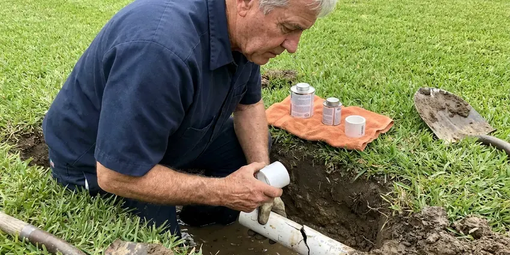

Basement Leak Repair in Frankfort, KY
For dependable basement leak repair in Frankfort, KY, trust BFK Plumbing. We diagnose and fix the source of the problem, leaving you with a dry and safe basement.
- Licensed & Insured
- Fast Leak Detection
- Foundation Specialists
- Long-Lasting Solutions

Need Basement Leak Repair in Frankfort, KY?
We repair the leak, test the fix and tell you plainly what it will take to keep the space dry.
Your Experts for Basement Leak Repair in Frankfort, KY
We understand the challenges of basement waterproofing in Kentucky and employ targeted methods to address everything from hairline cracks to major water breaches, protecting your property from structural damage and mold growth.
Our expertise includes:
- Modern Leak Detection Technology
- Thermal imaging and moisture mapping to trace hidden basement leaks
- Sump pump, floor drain and backwater valve installation and repair

Additional Plumbing Maintenance Services in Frankfort, KY
Our maintenance and specialty plumbing services in Frankfort, KY protect your home year-round and extend the life of every system.


Customers
Why Choose BFK Plumbing for Basement Leak Repair in Frankfort, KY?
Choosing the right contractor for basement leak repair is essential for the long-term health of your home. We use proven methods and quality materials to make sure every repair is durable and effective.
- Code Compliance, All our work adheres to local plumbing and building codes, giving you peace of mind.
- Accurate Diagnosis, We identify the exact cause of your basement leak, whether it's a foundation crack, pipe leak, or drainage issue.
- Code Compliant, All our work follows local plumbing and building codes in Frankfort and Kentucky.
Citywide Coverage
We repair basement leaks in older central neighborhoods of Frankfort and in newer hillside and custom homes alike. Wherever the basement is, our trucks arrive loaded with fittings, pipe and drainage parts.
Experienced Team
The experts at BFK Plumbing are skilled in diagnosing and repairing all types of basement leaks, from hairline foundation cracks to significant water intrusion. We understand Kentucky soil and its impact on home foundations.
Safety-First Approach
We use code-approved materials for every repair and install backwater valves and sump discharge lines to local requirements. If mold is visible, we guide you on safe remediation before walls are closed.
Trusted Certified Frankfort Plumbing Services Professionals
At BFK Plumbing, we take pride in providing licensed, certified plumbing services throughout Frankfort, KY. Backed by recognized industry credentials, our experienced plumbers combine technical skill with genuine customer care. Whether it is repair, installation, or maintenance, we follow strict safety and quality standards to deliver long-lasting results you can trust.
Call Us Now PHCC Plumbing Contractor Recognition
PHCC Plumbing Contractor Recognition Better Business Bureau (BBB) Accreditation
Better Business Bureau (BBB) Accreditation Angi Certified Pro
Angi Certified Pro ISO 9001 Quality Management Certification
ISO 9001 Quality Management CertificationProven Basement Leak Repair Services in Frankfort, KY
Emergency Basement Leak Repair in Frankfort, KY
A sudden basement leak can be a crisis, especially during heavy rains. BFK Plumbing provides emergency basement leak repair services in Frankfort, KY to address urgent water intrusion issues fast. Our fast response team is equipped to perform immediate diagnostics and temporary or permanent repairs, preventing further damage to your property and belongings.

Floor Drain and Backwater Valve Repair in Frankfort
A basement floor drain that backs up during heavy use or a storm typically points to a blockage or a failed trap. We clear the drain, check the line to the main sewer and replace cracked traps and covers. Installing a backwater valve stops sewage from pushing back into the basement if the main line surcharges. We set the valve where it can be serviced without trouble.
Emergency Basement Flooding Response in Frankfort
A burst pipe or a failed sump during a storm can put inches of water on the floor in minutes. Call us and shut off the main water valve if you can do so without risk. We stop the leak, pump out standing water from the plumbing failure and make the system safe. We can also refer you to drying and restoration crews when the damage calls for it.
Drain and Sewer Pipe Leak Repair in Frankfort, KY
Cast iron drain stacks in older homes crack and scale with age, and plastic joints can separate if a line was poorly supported. These leaks usually show up only when an upstairs fixture runs. We run water through each drain while watching the basement, then verify the crack with a camera. Repairs range from a single section swap to replacing an entire stack with PVC or ABS.
Basement Leak Repair Cost Comparison in Frankfort, KY
A simple fitting or supply line repair usually costs $200 to $600. Drain stack repairs run $500 to $2,500 depending on access and pipe material. A new sump pump installed typically costs $600 to $1,800, while interior drain channels and full seepage systems can run several thousand dollars. We explain each option in writing so you can weigh the fix against the risk.
Supply Line Leak Repair in Frankfort
Water lines that run along basement ceilings and walls can leak at fittings, valves or pinholes. Water softeners are a common upgrade in Kentucky homes, protecting tank water heaters, faucets, and appliances from mineral buildup. Water chemistry affects how fast copper corrodes, and older galvanized lines often rust from the inside. We locate the leak, replace the damaged section with copper or PEX and pressure test the repair. If the line shows widespread wear, we'll tell you whether a partial repipe makes more sense.
Sump Pump Repair and Installation in Frankfort, KY
Many basements rely on a sump pit to handle storm runoff and groundwater. Heavy rain and flash flooding are common in hilly parts of Kentucky, where runoff can overwhelm drains and push water into crawlspaces. Pumps from brands like Zoeller, Liberty and Wayne fail most often from a stuck float or a burned-out motor after sitting idle for long stretches. We repair or replace the pump, check the check valve and route the discharge well away from the foundation. A battery backup is worth considering because big storms often knock out power.

Foundation Crack Repair in Frankfort
Foundation cracks are a common entry point for basement water leaks, especially in homes built on soil that swells and shrinks. Crawlspaces and basements are both common in Kentucky, and crawlspace homes keep most plumbing repairs easier to reach. We use epoxy and polyurethane injection techniques to seal these cracks, preventing water infiltration and reinforcing your foundation. Our methods are matched to the specific type and size of the crack, ensuring a durable repair.
Basement Leak Repair Near Me in Frankfort, KY
If you are searching for basement leak repair near me, speed matters because water spreads under carpet and into drywall fast. Our crews work throughout the Frankfort area and can usually reach you the same day. We bring the detection tools needed to find the leak on the first visit.
Choosing a local expert like BFK Plumbing means you get a team familiar with Frankfort's plumbing and foundation needs. We're your neighbors, committed to providing quality basement leak repair solutions right here in your community.
BFK Plumbing at a Glance
- Licensed and insured plumbers serving Frankfort, KY
- Same-day appointments and 24/7 emergency response
- Clear written estimates, no hidden fees
- 4.8-star rated by 309+ Kentucky customers
Frankfort Map
Frankfort Information
- Population
- 28,285
- Area codes
- Local
- Service area
- Frankfort and communities within 40 miles
- Nearby
- Georgetown, Lexington, Nicholasville, Jeffersontown
Basement leak repair is crucial for homes in Frankfort, KY, because shifting soil can crack foundations and heavy rain raises hydrostatic pressure against the walls. Crawlspaces and basements are both common in Kentucky, and crawlspace homes keep most plumbing repairs easier to reach.
Expert Services
Trust our professionals for reliable BFK Plumbing solutions in Frankfort, KY.
Our Specialized Plumbing Services in Frankfort, KY
At BFK Plumbing, we provide a complete range of plumbing services across Frankfort, KY. From leak detection to full system installations, our team ensures fast, precise, and affordable service for both residential and commercial properties. Explore our core services below:


Here Is How Our Basement Leak Repair Process Works in Frankfort, KY
Every basement leak job starts with testing, so the repair you pay for is the one that fixes the problem.
Request a Quote
Call (502) 300-9896 and describe where you see water and when it appears. We schedule a visit, often the same day, and explain our inspection fee up front.
Trace the Source
Our technician uses moisture meters, thermal imaging and pressure or dye tests to isolate the leak. We show you what we found and give you clear repair options.
Repair and Verify
We make the repair, then retest the line or drain under real use. You get a summary of the work and advice to keep the basement dry.
Frequently Asked Questions About Basement Leak Repair in Frankfort
The cost of basement leak repair in Frankfort, KY can vary a great deal, typically ranging from $500 for minor crack repairs to $15,000 or more for extensive exterior waterproofing or drainage system installations. Factors include the leak's severity, accessibility, and the chosen repair method. We provide a written estimate after a thorough inspection.
We prioritize high-quality, reliable brands known for their durability and performance in basement waterproofing. This includes trusted names for epoxy and polyurethane injection materials, as well as well-known sump pump brands like Zoeller, Little Giant, and Liberty Pumps. Our material selection is based on the specific needs of your Frankfort property.
Heavy storms dump a lot of water quickly, and the soil around the foundation cannot absorb it fast enough. Heavy rain and flash flooding are common in hilly parts of Kentucky, where runoff can overwhelm drains and push water into crawlspaces. The water then pushes through wall joints, cracks and pipe penetrations. Better grading, gutters and a sump system usually solve it.
Yes. A small drip behind finished walls can rot framing, ruin flooring and grow mold within weeks. Catching it early keeps the repair small and the cost low.
Yes, even small basement leaks create the perfect moist environment for mold and mildew to thrive. Mold can grow quickly on organic materials like wood, drywall, and fabrics, leading to unpleasant odors and potential health issues. Addressing the leak promptly is crucial to prevent extensive mold contamination.
Common signs of a basement leak include damp spots on walls or floors, a musty odor, visible mold or mildew growth, white powdery efflorescence on concrete or masonry, pooling water, and warped baseboards or flooring. Don't ignore these warning signs; addressing them early can prevent more significant issues.
While some very minor leaks might seem like a DIY project, most basement leaks are complex and require professional expertise. Improper repairs can lead to more extensive damage, structural issues, and costly re-repairs. Professional plumbers and foundation specialists have the right tools and knowledge to provide lasting solutions.
The duration depends on the complexity of the repair. Simple crack injections might take a few hours, while more involved projects like interior or exterior drainage system installations can take several days to a week. We'll provide an estimated timeline during your consultation in Frankfort.
What People Are Saying About Our Plumbing Experts?

Patricia H.
We had a slab leak that two other companies could not find. BFK Plumbing located it in under an hour, explained our options, and the price matched the quote to the dollar.
Slab Leak Repair · Richmond, KY
Mark T.
When our office needed drain cleaning, BFK Plumbing provided quick, reliable service. The plumber arrived on time and made sure every drain flowed perfectly before leaving. Very satisfied.
Drain Cleaning · Jeffersontown, KY
Laura S.
I scheduled a water heater replacement, and the team made the process smooth and affordable. The new unit works perfectly, and they cleaned up after completing the job.
Water Heater Replacement · Richmond, KY
Emily R.
I called BFK Plumbing for plumbing repair, and the technician was fast, polite, and thorough. They explained the problem clearly and fixed it the same day. I will definitely hire them again. Highly recommended!
Plumbing Repair · Frankfort, KY
James P.
Our commercial plumbing system had a leak under the sink, and BFK Plumbing handled it professionally. The plumbers arrived quickly and restored everything without disruption to our customers.
Commercial Plumbing · Georgetown, KYSofia M.
Two new toilets installed in one visit, no mess left behind, and the tech even adjusted a faucet he noticed was dripping. Fair pricing and really friendly.
Toilet Installation · Louisville, KY